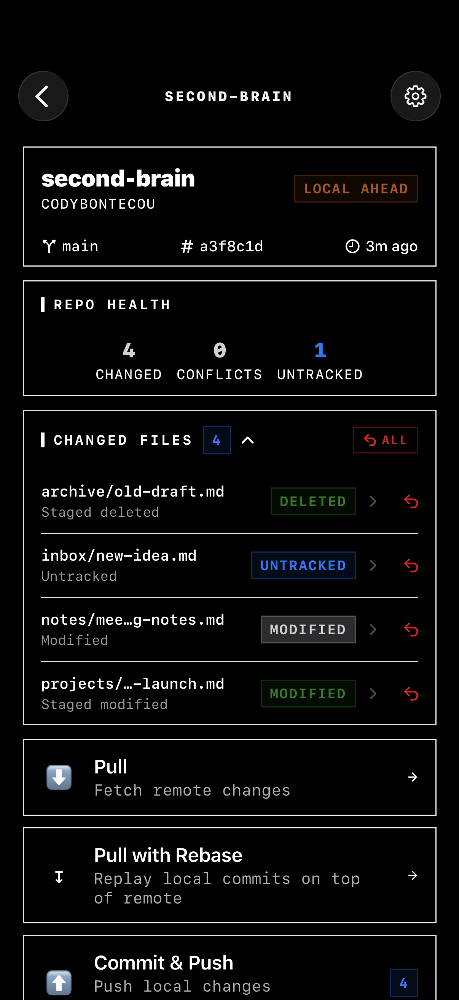
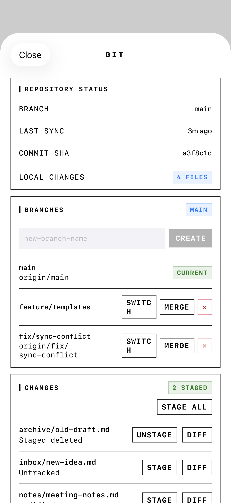

GitSync.md for iOS/iPadOSUpdated June 2026$9.99 once
Real Git for Obsidian and code on iPhone/iPad.
Clone private GitHub repos, edit Markdown or code, review diffs, commit, pull, and push from iOS. GitSync.md creates real .git working copies for Obsidian vaults, code projects, and Files-based workflows — no Mac, shell, or sync server required.
The app is built around the repeatable path buyers care about: clone a repo, edit the working copy, inspect status, pull, commit, push, and hand the same files to Obsidian or any app that uses iOS Files.
Clone once.Keep multiple vaults and codebases on device, ready to reopen or re-clone without hunting through URLs.

Review before you push.See branch, short SHA, changed-file counts, conflicts, and the exact actions available for that repo.

Control Git state.Review branches, staged files, stash, tags, and repository status before you sync.
002 — Capabilities
The paid-app checklist: Git, editor, diffs, automation.
01
Real Git
Powered by libgit2. Actual .git directories, real commit history, real branches. Your working copy stays standard Git on disk.
02
Private Repo Ready
Sign in with GitHub OAuth or paste a Personal Access Token — and connect multiple GitHub accounts, switching between them while each repo stays scoped to its owner. Credentials are stored in Keychain and used from your device to the remote.
03
Code Editor
A full syntax-highlighted editor built into the app. Swift, Python, JavaScript, TypeScript, Markdown, JSON, YAML, Bash, HTML, and CSS — with VSCode-style Dark+ and Light+ themes.
04
File Manager
A hierarchical file browser with git-status badges on every file. Create, rename, and delete files directly inside the app without leaving your workflow.
05
Diff Viewer
Line-by-line unified diffs with color-coded additions and deletions, hunk headers, added/removed counts, and one-tap revert for any changed file — plus a paginated commit-history browser with per-commit file changes.
06
Branch Controls
Create, switch, merge, and delete local branches. Full stash management with messages, and annotated tag support — all from a single Git control sheet.
07
Push & Pull
Full upstream workflow. Pull remote changes — fast-forward, or rebase your local commits when histories diverge — stage individual files, write a commit message, and push with the result verified against the remote.
08
Multi-Repo
Projects, dotfiles, notes, configs — manage them all. Each repo has its own branch, author identity, custom storage location, and sync state.
09
x-callback-url
Obsidian and Shortcuts can call syncmd://x-callback-url/sync to pull and push. The scheme stays syncmd:// for compatibility.
10
Self-Hosted & SSH
GitLab, Bitbucket, Gitea, Forgejo, or your own server. Add any remote by URL and authenticate with an SSH key (Ed25519/ECDSA/RSA) — host keys verified by SHA-256 fingerprint on first connect.
11
Git LFS
Media and big binaries just work: LFS files download automatically after clone and pull, you're prompted before large files get LFS-tracked, and file locking plus push guards keep teams safe.
12
Conflict Resolution
When histories diverge, choose merge or rebase explicitly. Resolve conflicts per file — ours, theirs, or edit in the side-by-side three-way view — then complete or abort cleanly.
003 — Workflow
Clone to push in five steps.
01
Authenticate
Sign in with GitHub OAuth or paste a Personal Access Token. Keychain-stored, encrypted at rest.
02
Clone
Browse your accessible repos, tap to clone. The repository downloads to your device with its Git history and working tree.
03
Browse
Navigate your repository with the built-in file browser. Git-status badges on every file — see exactly what's changed at a glance.
04
Edit
Open any file in the built-in syntax-highlighted editor. Or use the iOS Files provider to open files in your preferred external app.
05
Sync
Pull changes, review diffs, commit your edits, push upstream. Full version control from your pocket.
004 — Use cases
Built for the people who already live in text files.
Obsidian users
Keep your vault in Git, not another subscription silo.
Clone the vault repo into the location Obsidian can see, then use Obsidian Git or GitSync.md's own actions to pull, commit, and push changes from iPhone or iPad.
Works with real .git directoriessyncmd:// automation for mobile sync buttonsNo Obsidian Sync server required
Developers
Make the one-line fix without opening a laptop.
Review a repo, edit source or config files with syntax highlighting, inspect diffs, write a commit message, and push the same Git history your desktop would create.
Swift, Python, JavaScript, TypeScript, Markdown, JSON, YAMLBranch, stash, tag, merge, pull, pushUseful for docs, hotfixes, dotfiles, and static sites
Markdown + Files
Let iOS apps edit the files; let GitSync.md handle Git.
Repos can live in Files-visible locations so writing apps, Markdown editors, and document workflows can touch the same folder. GitSync.md remains the version-control layer.
Open repo folders from the iOS Files appUse one source folder to avoid duplicate cloud copiesDevice-to-remote architecture, no middleman sync service
005 — Integrations
Works with the iOS tools around your repo.
x-callback-url
Obsidian
Tap a syncmd://x-callback-url/sync link in any note, or run it from an iOS Shortcut, to pull and push without leaving your vault. Implementation guide →
Files App
iOS Files
Every cloned repo appears in the iOS file provider. Browse, edit, and manage with any app that reads Files.
Git remotes
GitHub first-class, any Git remote works
GitHub is the smoothest path (OAuth or PAT, browse and clone). Self-hosted and other hosts — GitLab, Bitbucket, Gitea, Forgejo — work via manual URL with HTTPS token or SSH key (Ed25519/ECDSA/RSA) and verified host keys.
006 — Automation
Wire Obsidian, Shortcuts, or your launcher to real Git.
Quick start URL
Any app that can open URLs can trigger a full pull + push by opening this URL:
syncmd://x-callback-url/sync?repo=MyVault
The repo value must match the vault or repo folder name shown in GitSync.md.
Supported actions
/pull — fetch + fast-forward from remote
/push — stage all, commit, and push
/sync — pull then push (recommended)
/status — read branch/SHA/change count
Optional callback parameters
Add these for full x-callback-url flow control:
message — commit message for push/sync
x-success — URL opened after success
x-error — URL opened after failure
Apple Shortcuts
Native App Intents, no URL building required:
Pull All Repositories — syncs every cloned repo
Pull Repository — pick one repo
Both work with Siri phrases and Personal Automations (e.g. “pull my notes” when the app opens). Pull-only by design — pushes stay deliberate.
Obsidian implementation
Obsidian Git has no URL setting. Instead, paste this link into any note and tap it to sync:
$9.99 one-time · no subscription · unlimited repositories
Source
Open source on GitHub
Source code is trust, not the main checkout path. Buy the App Store build for the signed iPhone/iPad app. Use the GitHub repo to audit implementation details, follow issues, or contribute fixes.
Yes for GitHub repos you can access with OAuth or a Personal Access Token. Use the scopes required by your repo, usually repo for private GitHub repositories.
Where are tokens stored?
GitSync.md stores OAuth/PAT credentials in the iOS Keychain. The site and app do not operate a sync server for your tokens or repository contents.
Is there a GitSync.md server in the middle?
No. Git operations run on device through the app's native Git engine and talk directly to the configured remote. Your repos are not mirrored through a Cody-operated sync service.
How do I use it with Obsidian?
Clone the vault repo into a Files location Obsidian can access, then use Obsidian Git or syncmd://x-callback-url/sync automation to trigger pull/push from your mobile vault. The guide below walks through the setup.
Why is the URL scheme syncmd://?
The App Store/product name is GitSync.md. Some on-device labels and the automation scheme still use the shorter Sync.md / syncmd:// naming so existing Shortcuts and Obsidian Git configurations continue to work.
Does it support GitLab or Bitbucket?
Yes. GitHub gets the smoothest setup (sign in, browse, tap to clone), but any Git remote works: GitLab, Bitbucket, Gitea, Forgejo, or your own server. Add the repository by URL (https://, git://, or SSH like git@example.com:team/notes.git) and pick the matching auth — HTTPS token, or an SSH key (Ed25519/ECDSA/RSA) with per-host key verification.
What happens with merge conflicts?
Conflicts get a dedicated Conflict Center: pick ours, theirs, or edit a merged result in the side-by-side three-way view (it even handles rename-vs-rename and delete-vs-modify cases), then complete the merge or rebase — or abort cleanly. When local and remote history has diverged, you choose merge or pull-with-rebase explicitly. Exotic conflicts can still be finished on desktop: it's a real Git working copy.
Can repos live in iCloud Drive or Files?
The app supports Files-visible repo locations. For reliability, keep one canonical repo folder and avoid editing duplicate cloud copies of the same repository at the same time.
Can I add a repository that's already on my device?
Yes. Choose Open Existing Repository when adding, point it at any Files folder that contains a .git directory, and GitSync.md manages it in place — the folder is never moved or copied.
What happens to my files if I remove a repository?
Removing a repo from GitSync.md never touches your files by default — the working copy stays right where it is. If GitSync.md created the folder itself, an explicit Delete Local Files action is available separately. Removed repos can also be re-added in one tap from the "previously cloned" list.
Does it support Git LFS?
Yes. LFS files download automatically after clone and pull, large binaries are offered LFS tracking (with your confirmation — and .gitattributes is updated for you), objects upload before each push, and file locking with push guards works on servers that support it. Self-hosted LFS endpoints work too, including over SSH.
Is it iPhone only? Is there a subscription?
GitSync.md is for iPhone and iPad. The App Store price is $9.99 one-time: no subscription and unlimited repositories.